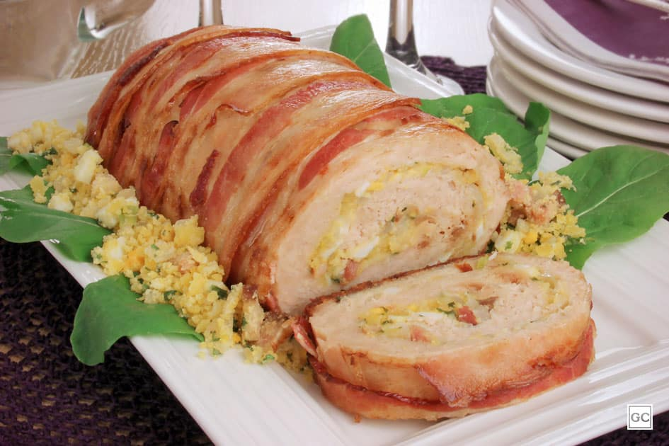

Meat Roll Recipe
Back to Home

Photo of a meat roll with mashed potatoes and vegetables
Meat roll is a dish made of ground meat (usually beef or pork) mixed with various ingredients such as onions, garlic, herbs, and spices.
The mixture is then rolled into a log shape and baked in the oven until cooked through. It is often served
with mashed potatoes and vegetables.
Ingredients
- 500g of ground beef or pork
- 1 onion
- 2 cloves of garlic
- 1/2 cup of breadcrumbs
- 1/4 cup of milk
- 1 egg
- 2 tablespoons of chopped parsley
- Salt and pepper to taste
Steps
- Preheat the oven to 180°C (350°F).
- In a bowl, mix the ground meat with the finely chopped onion and garlic. Add the breadcrumbs, milk, egg, chopped parsley, salt, and pepper. Mix well until all ingredients are combined.
- On a piece of parchment paper, shape the meat mixture into a log shape, about 20 cm (8 inches) long.
- Roll the parchment paper around the meat log and place it on a baking sheet.
- Bake in the preheated oven for about 45-60 minutes, or until the meat is cooked through and the internal temperature reaches 70°C (160°F).
- Remove from the oven and let it rest for a few minutes before slicing and serving with mashed potatoes and vegetables.